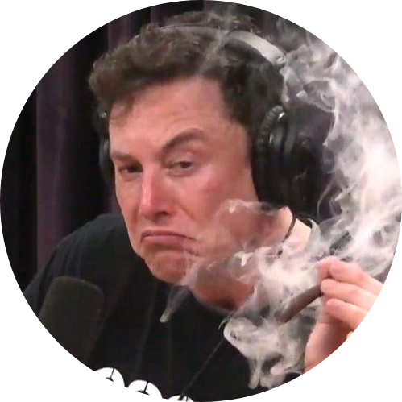

|  |
Elon MuskJust an ordinary person Elon Reeve Musk FRS (/ˈiːlɒn/ EE-lon; born June 28, 1971) is an entrepreneur and business magnate. He is the founder, CEO, and Chief Engineer at SpaceX; early stage investor,[note 1] CEO, and Product Architect of Tesla, Inc.; founder of The Boring Company; and co-founder of Neuralink and OpenAI. A centibillionaire, Musk is one of the richest people in the world. See his pesronal photos. |
| Companies | Some info |
|---|---|
| SpaceX | Space Exploration Technologies Corp. (SpaceX) is an American aerospace manufacturer, space transportation services and communications company headquartered in Hawthorne, California. SpaceX was founded in 2002 by Elon Musk with the goal of reducing space transportation costs to enable the colonization of Mars. SpaceX manufactures the Falcon 9 and Falcon Heavy launch vehicles, several rocket engines, Dragon cargo, crew spacecraft and Starlink communications satellites. |
| OpenAI | OpenAI is an artificial intelligence (AI) research laboratory consisting of the for-profit corporation OpenAI LP and its parent company, the non-profit OpenAI Inc. The company, considered a competitor to DeepMind, conducts research in the field of AI with the stated goal of promoting and developing friendly AI in a way that benefits humanity as a whole. The organization was founded in San Francisco in late 2015 by Elon Musk, Sam Altman, and others, who collectively pledged US$1 billion. Musk resigned from the board in February 2018 but remained a donor. In 2019, OpenAI LP received a US$1 billion investment from Microsoft. |
|
|